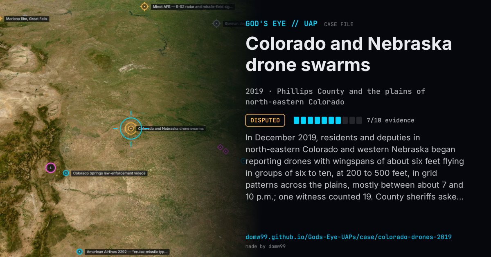

Colorado and Nebraska drone swarms

In December 2019, residents and deputies in north-eastern Colorado and western Nebraska began reporting drones with wingspans of about six feet flying in groups of six to ten, at 200 to 500 feet, in grid patterns across the plains, mostly between about 7 and 10 p.m.; one witness counted 19. County sheriffs asked the public for information, and more than 70 local, state and federal agencies met in Brush on January 6, 2020. The FAA said no drone company or test site had authorized flights there, and the Air Force, which had run counter-drone exercises at F. E. Warren AFB, would neither claim nor deny the drones. As the sightings spread, more and more turned out to be planets, stars and airliners, and the state ended its search later that month.
Explanation
State and federal agencies found that most reports were planets, stars, aircraft and hobby drones, and the Colorado Department of Public Safety stood its effort down in January 2020. The large, grid-flying drones of the first reports were never tied to an operator.
What was seen
Shape: Drones with a wingspan of about 6 ft and blinking lights, in groups of six to ten, flying grid patterns
Witnesses: Ranchers, residents and county sheriff’s deputies
Duration: About six weeks
Sources
- Wikipedia — 2019–20 Colorado drone sightings
- Colorado Public Radio — The FAA is now investigating Colorado’s mysterious drones (2019)
- The War Zone — FAA documents on the Colorado drone mystery
Browse
- United States
- 2010s
- Disputed
- Recurring lights
- Official government documents
- Many independent witnesses
- Photographs
- Police witnesses
- Video footage
- Lights and fireballs